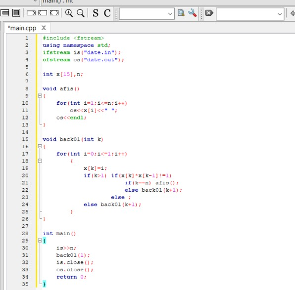
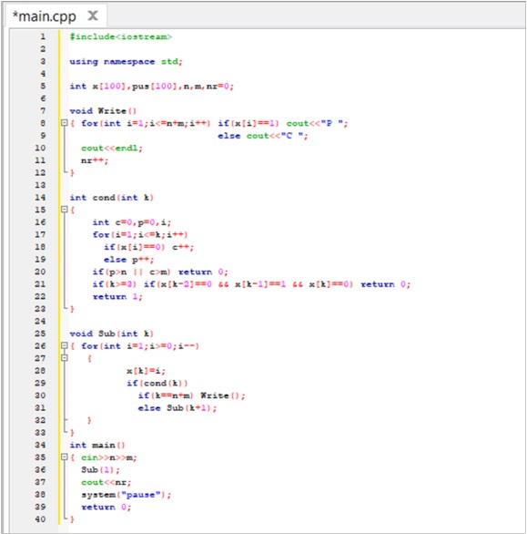

Backtracking este numele unui algoritm general de descoperire a tuturor soluțiilor unei probleme de calcul, algoritm ce se bazează pe construirea incrementală de soluții-candidat, abandonând fiecare candidat parțial imediat ce devine clar că acesta nu are șanse să devină o soluție validă.
- Cum se rezolvă
- 1. La fiecare pas k pornim de la o soluţie parţială v=( v1,v2,v3,...,vk-1) determinată până în acel moment şi încercăm să extindem această soluţie adăugând un nou element la sfârşitul vectorului.
- 2. Căutăm în mulţimea Sk , un nou element.
- 3. Dacă există un element neselectat încă, verificăm dacă acest element îndeplineşte condiţiile impuse de problemă, numite condiţii de continuare.
- 4. Dacă sunt respectate condiţiile de continuare, adăugăm elementul soluţiei parţiale.
- 5. Verificăm dacă am obţinut o soluţie completă. - dacă am obţinut o soluţie completă o afişăm şi se reia algoritmul de la pasul 1. - dacă nu am obţinut o soluţie, k <----- k+1 si se reia algoritmul de la pasul 1.
- 6. Dacă nu sunt respectate condiţiile de continuare se reia algoritmul de la pasul 2.
- 7. Dacă nu mai există nici un element neverificat în mulţimea Sk înseamnă că nu mai avem nici o posibilitate din acest moment, să construim soluţia finală aşa că trebuie să modificăm alegerile făcute în prealabil, astfel k <----- k-1 şi se reia problema de la pasul 1.
- Problema 1
- Se citește un număr natural n,generați și aflați combinațiile de cate n cifre binare care nu au doua cifre de 1 alăturate 
- Problema 2
- Să se creeze unprogram care să aranjeze în modurile posibile n creioane și m pixuri,astfel încat niciun creion să nu fie așezat între doi pixuri 